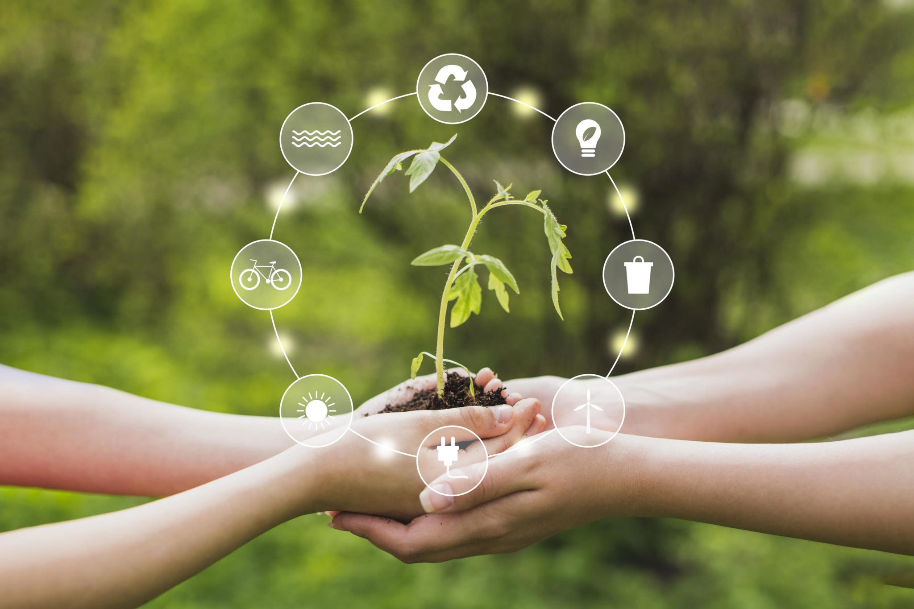

CUIDADO DEL MEDIO AMBIENTE

SOSTENIBILIDAD
En Greenfilm, nos enorgullece liderar iniciativas sostenibles en la industria del polietileno. Abogamos por la responsabilidad ambiental y promovemos activamente el reciclado mecánico como parte fundamental de nuestra operación. Este proceso físico-mecánico no solo permite dar una segunda vida al plástico, sino que también contribuye significativamente a la reducción de residuos.
Comprometidos con la ecoeficiencia, trabajamos incansablemente para reutilizar materiales plásticos procedentes de Residuos Sólidos Urbanos y residuos industriales. Nuestra visión va más allá de la producción; aspiramos a ser un agente positivo para el medio ambiente, promoviendo prácticas que contribuyen a la sostenibilidad global.
En Greenfilm, creemos en la importancia de un enfoque circular para el polietileno, garantizando no solo la calidad de nuestros productos, sino también el bienestar de nuestro planeta. Con cada paso que damos, reafirmamos nuestro compromiso con un futuro más verde y próspero para las generaciones venideras. ¡Únete a nosotros en nuestro viaje hacia un mundo más sostenible!
Separación domiciliaria
Recolección diferenciada y centros verdes
Industria recicladora plástica
Nuevos productos reciclados

Estamos a la vanguardia del desarrollo y la adopción de tecnologías de reciclaje innovadoras. Trabajamos incansablemente para mejorar los procesos de reciclaje de plástico, transformando los residuos en recursos valiosos y contribuyendo así a la reducción de la contaminación y la conservación de recursos.
Adoptamos prácticas de diseño ecoeficiente para minimizar la cantidad de plástico utilizado en nuestros productos. Buscamos constantemente alternativas de embalaje más ligeras, eficientes y respetuosas con el medio ambiente, manteniendo al mismo tiempo la integridad y funcionalidad de nuestros productos.
Promovemos activamente la economía circular del plástico. Desde la concepción hasta el fin de vida útil de nuestros productos, trabajamos para cerrar el ciclo, fomentando la reutilización, el reciclaje y la reincorporación de materiales plásticos en nuevos ciclos de producción.
Invertimos en investigación y desarrollo para descubrir y adoptar materiales plásticos más sostenibles. Buscamos constantemente alternativas biodegradables, compostables y de base biológica que puedan reducir la huella ambiental del plástico.
Creemos en la importancia de la educación y la concienciación. Trabajamos activamente para informar a nuestros clientes, colaboradores y la comunidad sobre prácticas sostenibles en el manejo del plástico, alentando un consumo consciente y responsable.
En Greenfilm, estamos comprometidos con la evolución hacia un futuro donde el plástico coexista de manera armoniosa con nuestro entorno. Nuestra dedicación a la sostenibilidad refleja nuestro compromiso con un mundo más limpio, más verde y más equitativo para las generaciones venideras. ¡Juntos, construimos un futuro sustentable!